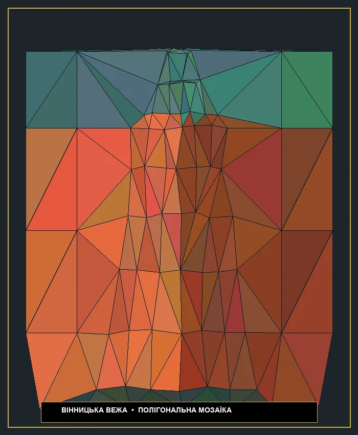
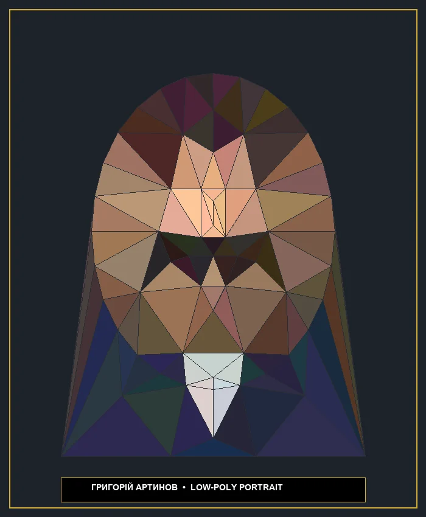
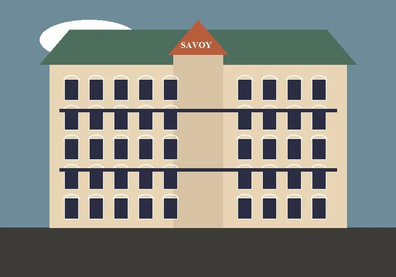
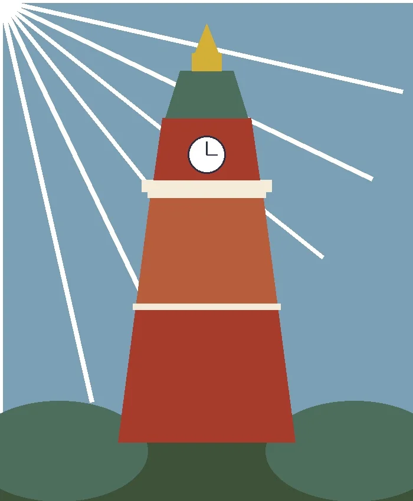
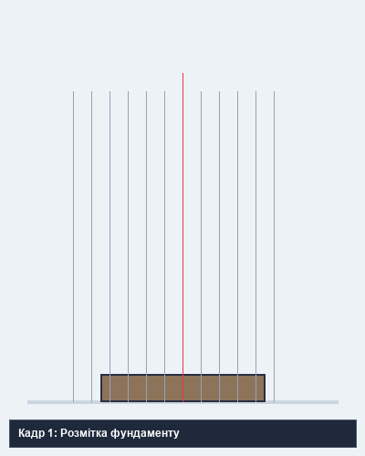

Галерея цифрової графіки
Всі статичні та динамічні графічні матеріали, розроблені в межах курсової роботи

InkscapeПолігональна мозаїка Вежі
Векторна низькополігональна стилізація силуету Водонапірної вежі.

InkscapeПолігональний портрет зодчого
Тріангуляція Делоне обличчя Григорія Артинова (98 граней).
 Inkscape
Inkscape
Художній векторний портрет
Лінійне контурне векторне подання образу зодчого у стилі модерну.
 Креслення
Креслення
Креслення фасаду театру
Ортогональна проєкція класичного портика міського театру 1910 року.

PhotopeaРеставрація готелю «Савой»
Пошарова ретуш, маскування та колоризація фасаду будівлі.

PhotopeaПарадна композиція Вежі
Художній колаж пам'ятки з сонячними променями та парком.
 Photopea
Photopea
Зодчий у кабінеті з кресленнями
Історична сцена роботи над водогоном міста Вінниця.

FlipAnimПокадрова анімація Вежі
Циклічний анімаційний ролик зведення та підсвічування споруди.